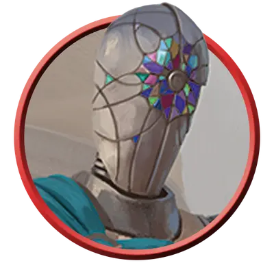

Шустрабо-страж
Nimblewright Guard
Средний Конструкт, Нейтральный

Класс Защиты 16 Инициатива +6 (16)
Хиты 67 (9к8 + 27)
Скорость 60 футов
| мод | спас | ||
|---|---|---|---|
| СИЛ | 12 | +1 | +1 |
| ЛОВ | 18 | +4 | +6 |
| ТЕЛ | 16 | +3 | +3 |
| мод | спас | ||
|---|---|---|---|
| ИНТ | 8 | −1 | −1 |
| МДР | 12 | +1 | +1 |
| ХАР | 6 | −2 | −2 |
Иммунитеты Психический, Яд; Истощение, Окаменевший, Отравленный, Очарованный, Парализованный
Чувства Тёмное зрение 60 футов, пассивное Восприятие 13
Языки знает Общий плюс один другой язык, но не говорит
Опасность 3 (700 опыта; БВ +2)
Особенности
Увёртливость. Если шустрабо подвергается эффекту, позволяющему совершить спасбросок Ловкости, чтобы получить только половину урона, то вместо этого он вообще не получает никакого урона, если преуспевает в спасброске, и только половину, если проваливает его; для этого он не должен быть Недееспособным.
Действия
Мультиатака. Шустрабо совершает три атаки Скимитаром или Заводным арбалетом в любой комбинации.
Скимитар. Бросок рукопашной атаки: +6, досягаемость 5 фт. Попадание: 7 (1к6 + 4) Рубящего урона.
Заводной арбалет. Бросок дальнобойной атаки: +6, дистанция 80/320 фт. Попадание: 8 (1к8 + 4) Колющего урона.
Реакции
Парирование. Условие: По шустрабо попадает рукопашная атака, пока он держит оружие. Эффект: Шустрабо добавляет +2 к своему КЗ против этой атаки, что может привести к её промаху.
Бонус мастерства +2
Среда обитания Город
Сокровища Отсутствуют
Шустрабо
Искусно созданные заводные стражи
Шустрабо изготавливают из прочного дерева, а оживляют при помощи магии и заводных механизмов. У одних шестерни и пружины защищены металлическими пластинами, у других внутреннее устройство остаётся открытым взгляду. Однако это не бездумные автоматы: шустрабо умеют выстраивать простейшие логические цепочки, менять привычную модель поведения и адаптироваться к неожиданной опасности.
Для созданий из живой древесины и металла шустрабо удивительно проворны. Они ходят плавной, текучей походкой, а в бою кружатся в стремительных пируэтах.
Шустрабо могут добавить ярких красок в описание Калимшана и других мест, где они не редкость. Совершите бросок по таблице «Занятия шустрабо» для вдохновения или определите сами, чем занят шустрабо-страж или шустрабо-бастион в людном месте.
Занятия шустрабо
| к6 | Шустрабо… |
| 1 | Служит внимательным телохранителем при надменном сановнике. |
| 2 | Сканирует обстановку, чтобы предотвратить покушение. |
| 3 | Разыскивает вора, похитившего одну из его шестерёнок. |
| 4 | Старается потушить пожар, пока тот не разгорелся. |
| 5 | Задерживает пленника, который клянётся в своей невиновности. |
| 6 | Тащит обычные товары, но безнадёжно заблудился. |
Шустрабо-стражи — бдительные часовые, обходящие важные места. Они служат верными солдатами или неусыпными телохранителями.